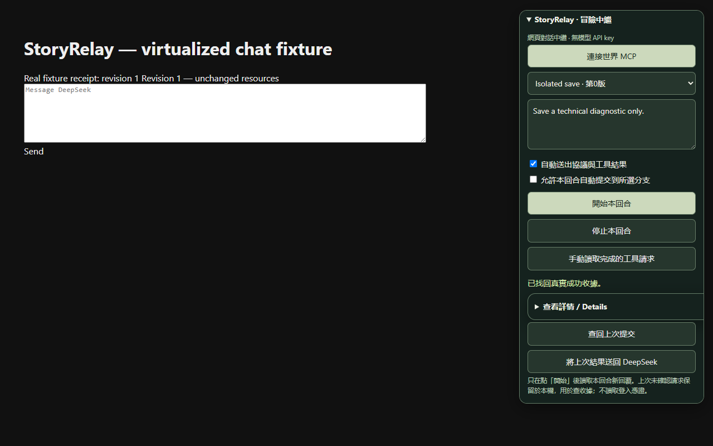

STORYRELAY · OPEN SOURCE故事繼續往前。
進度確實留下。
在 DeepSeek 官方網頁玩長篇文字冒險。連接你的世界、選擇存檔，讓每次行動都有可查回的伺服器收據。
Chrome 擴充功能 · MIT · 免模型 API key目前為早期側載版，尚未在 Chrome Web Store 上架。需已有相容世界；沒有附送公開遊戲或小說內容。
一次連接，接著遊玩
- 下載解壓，在 Chrome 擴充功能頁載入未封裝項目。
- 貼一次世界首頁網址，授權該網站並正常登入。
- 開啟 DeepSeek，選存檔、輸入行動、開始回合。
不用 Tampermonkey、指令列、本機代理或模型 API key。世界中繼分頁自動開啟，保持該頁開著即可。
存檔不靠一句「已完成」
分支和玩家原話綁定到每回合。預設先預覽再寫入；回傳不明時保留原提交鍵查收據。只有伺服器確認成功，才顯示已存檔。
StoryRelay 不取代遊戲後端的身份驗證、裁定與交易，也不能保證 LLM 永遠不出錯。
看得見的驗證

上圖是實際 Manifest V3 擴充功能的隔離測試，模型與世界回覆使用合成資料。不是公開可玩世界，也不是商店已審核的證明。
為世界作者準備
目前支援 scene-v1：讀取場景、寫入結果、分支選擇、收據恢復。不是任何 MCP URL 都能直接使用。沿用網站正常登入，不把登入憑證交給模型。
閱讀世界整合協定